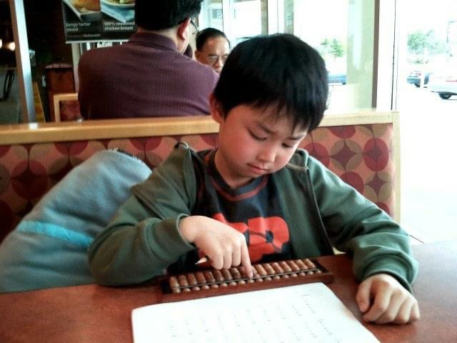

Hi, my name is James
Introduction
Fun fact: I have played violin my whole life.
Hi, my name is James Yung and I am currently pursuing a Computer Science Specialist degree at the University of Toronto where I am expected to graduate in April of 2026. I absolutely love learning new things and meeting new people!
Here is a little bit about myself, enjoy
My Projects
GlobeWallet
November 2023
A banking application that allows users to store money, transfer money between accounts, and make international currency exchanges.
TalkTalk
September 2023
I created a messaging platform using Python socket and threading for the client server and the backend, and Python flask for the frontend.

SuiteMate
March 2023
As students who were going into our second year, we knew the struggles of finding a suitable roommate with similar interests when it comes to occupations and living habbits. Thus, we created a roommate finding platform designed for students at the University of Toronto that matches its users with potential partners based on their preferences. Whether the user wants a roommate of the same gender, or someone who refrains from smoking, we keep many variables into consideration when pairing two users.
My Experiences
Private Violin Instructor
September 2023 - Present
I offer one-on-one violin lessons to students of all ages where I am responsible for organizing lesson plans and delivering lessons.
Software Engineer Intern
May 2023 - August 2023
Over the summer of my first year studies, I was lucky to have been given the opportunity to intern at a software company in Taipei, Taiwan. At the time, Japan had released a law where all new houses built beyond April 2025 would require to have solar panels installed. Thus, Creative 5 had collaborated with other companies to create a system where households would be able to monitor the flow of electricity around their house (power consumption, solar panel input, etc.), purchase electricity from power providers and sell excess electricity from solar panels to providers.
Founder and President
March 2021 - June 2022
I started a game development club at my high school called Trudeau Game Design where we teach other video game enthusiasts how to make games with Unity.

Administrative Assistant
September 2018 - March 2020
I was an Administrative Assistant at the York Region District School Board for the International Languages program where I performed my duties at a government-funded Chinese School.
Builder
September 2018 - March 2020
I participated in a 5 man Vex robotics team where we qualified for the international stage representing Canada in 2020.
My other hobbies
Golf

Basketball
Volleyball

Piano

Games

Skiing
Languages I speak
English (native)
Mandarin
Cantonese
French (French Immersion)
Contact Me
I'd love to get in contact with you, so please feel free to reach me on any of these platforms.
Made with HTML, CSS, Javascript, & Bootstrap.
GlobeWallet
GlobeWallet is a Cross-Currency Banking System that provides functions such as foreign exchange and money transfer.
Skills used:
- Java
- terminal and git commands
Skills learned:
- API Calls: Email Sender, Currency Exchange Rate
The goal of this project was to create a banking system that appeals to customers by making our currency exchange system free of charge.
TalkTalk
I created a messaging application in python to learn about hosting servers.
Skills used:
- Python, Flask, Socket, Threading
- Terminal Commmands
- Vim Code Editor
Skills learned:
- Creating and Managing a Server
The goal of this project was to introduce myself to the concept of hosting a server
Basketball


I have been playing basketball ever since third grade and it has always stuck with me to this day.
Piano


Our family always had a piano that no one touched so during COVID-19, I decided to learn how to play off of youtube for fun.
Painting


Painting has always been a hobby of mine ever since kindergarten. At one point in my life, I had even considered choosing visual arts as a career path.
Skiing


As a born and raised Canadian, I was pretty much obligated to learn how to ski :)